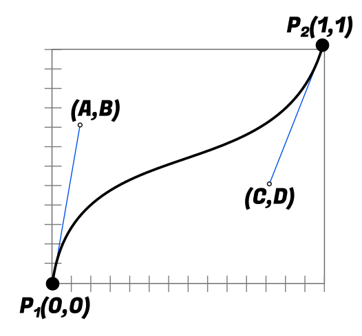
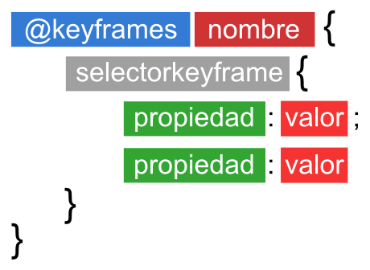
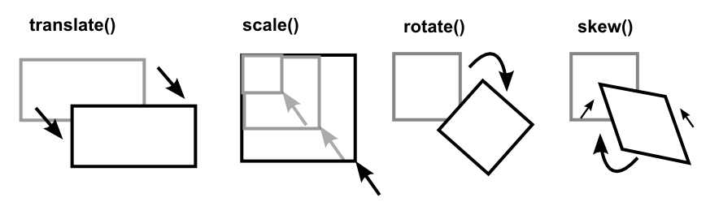
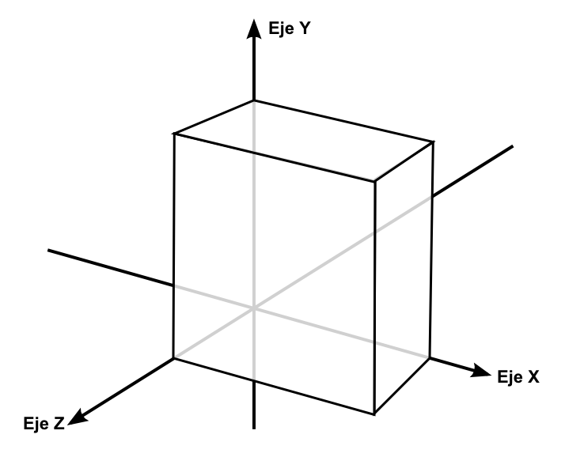

Animaciones CSS¶
Transiciones CSS¶
En CSS aparecen uno de los aspectos más interesantes de la web interactiva: las transiciones. En versiones anteriores de CSS sólo se podían utilizar ciertas funcionalidades interactivas con pseudoclases como :hover o :focus. Sin embargo, dichas transiciones ocurrían de golpe, pasando de un estado inicial a otro final. Mediante las transiciones, tenemos a nuestra disposición una gran flexibilidad que nos permitirá dotar de atractivos y elegantes efectos de transición que multiplicarán por mil las posibilidades de nuestros diseños.
Las transiciones se basan en un principio muy básico, conseguir un efecto suavizado entre un estado inicial y un estado final. Las propiedades relacionadas que existen son las siguientes:
| Propiedades | Valor |
|---|---|
transition-property |
all |
transition-duration |
0 |
transition-timing-function |
ease |
transition-delay |
0 |
En primer lugar, la propiedad transition-property se utiliza para especificar la propiedad a la que que afectará la transición. Podemos especificar la propiedad concreta (width o color, por ejemplo) o simplemente especificar all para que se aplique a todos los elementos con los que se encuentre. Por otro lado, none hace que no se aplique ninguna transición.
Nota: Debes saber que no todos los elementos permiten animación debido a su complejidad. Por ejemplo, los
background-imagede gradientes no son animables actualmente.
Con la propiedad transition-duration especificaremos la duración de la transición, desde el inicio de la transición, hasta su finalización. Se recomienda siempre comenzar con valores cortos, para que las transiciones sean rápidas y elegantes.
Si establecemos una duración demasiado grande, el navegador realizará la transición con detención intermitentes, lo que hará que la transición vaya a golpes. Además, transiciones muy largas pueden resultar molestas a muchos usuarios.
Función de tiempo¶
La propiedad transition-timing-function permite indicar el ritmo de la transición que queremos conseguir. Cuando estamos aprendiendo CSS, recomiendo utilizar linear, que realiza una transición a un ritmo constante. Sin embargo, podemos utilizar otros valores para conseguir que el ritmo sea diferente al inicio y/o al final de la transición.
Los valores que puede tomar la propiedad son los siguientes:
| Valor | Inicio | Transcurso | Final | Equivalente en cubic-beizer |
|---|---|---|---|---|
| ease | Lento | Rápido | Lento | (0.25, 0.1, 0.25, 1) |
| linear | Normal | Normal | Normal | (0, 0, 1, 1) |
| ease-in | Lento | Normal | Normal | (0.42, 0, 1, 1) |
| ease-out | Normal | Normal | Lento | (0, 0, 0.58, 1) |
| ease-in-out | Lento | Normal | Lento | (0.42, 0, 0.58, 1) |
| cubic-bezier(A, B, C, D) | - | - | - | Transición personalizada |
Una función de tiempo linear siempre es constante, mientras que ease comienza suavemente, continua de forma más rápida y termina suavemente de nuevo. Ease-in y ease-out son variaciones que van más lento al principio o al final, y ease-in-out una mezcla de las dos.
Cubic-Bezier()¶
La función de tiempo cubic-bezier() es una función personalizada, donde podemos darle unos valores concretos depediendo de la velocidad que queramos que tenga la transición. En la última columna de la tabla anterior podemos ver los valores equivalentes a cada una de las palabras clave mencionadas. En principio, el formato de la función es cubic-bezier(A, B, C, D), donde:
| Parámetro | Valor | Descripción | Pertenece a |
|---|---|---|---|
A |
X1 | Eje X del primer punto que orienta la curva bezier. | P1 |
B |
Y1 | Eje Y del primer punto que orienta la curva bezier. | P1 |
C |
X2 | Eje X del segundo punto que orienta la curva bezier. | P2 |
D |
Y2 | Eje Y del segundo punto que orienta la curva bezier. | P2 |

También puedes utilizar la página Cubic Bezier, donde puedes ver de forma interactiva la velocidad de las transiciones dependiendo de los parámetros utilizados.
Por último, la propiedad transition-delay nos ofrece la posibilidad de retrasar el inicio de la transición los segundos especificados.
Veamos un pequeño ejemplo de todo ello:
a {
background: #DDD;
color: #222;
padding: 2px;
border: 1px solid #AAA;
}
a:hover {
background: #FFF;
color: #666;
padding: 8px 14px;
border: 1px solid #888;
transition-property: all;
transition-duration: 0.2s;
transition-timing-function: ease-in;
}
Truco: Si nos fijamos bien, este estilo se aplica sólo al mover el ratón sobre el enlace (transición de entrada). Sin embargo, si movemos el ratón fuera del enlace, no se produce transición sino que realiza el cambio de forma brusca. Si movemos las propiedades de transición al primer bloque, se aplicarán tanto en las transiciones de entrada como en las de salida.
Atajo: Transiciones¶
Como siempre, podemos resumir todas estas operaciones en una propiedad de atajo denominada transition. Los valores del ejemplo superior, se podrían escribir como se puede ver a continuación (si no necesitas algún valor, se puede omitir):
div {
/* transition: <property> <duration> <timing-function> <delay> */
transition: all 0.2s ease-in;
}
¶
div {
/* transition: <property> <duration> <timing-function> <delay> */
transition: all 0.2s ease-in;
}
Animaciones CSS¶
Una vez conocemos las transiciones CSS, es muy fácil adaptarnos al concepto de animaciones de CSS, el cual amplia el concepto de transiciones convirtiéndolo en algo mucho más flexible y potente.
Las transiciones son una manera de suavizar un cambio de un estado inicial a un estado final. La idea de las animaciones CSS parte del mismo concepto, permitiendo añadir más estados, pudiendo realizar cambios desde un estado inicial, a un estado posterior, a otro estado posterior, y así sucesivamente. Además, esto será posible de forma automática, sin que el usuario tenga que realizar una acción concreta.
El primer paso para crear animaciones es tener dos cosas claras. Por un lado, utilizaremos la regla @keyframes, que incluye los fotogramas de la animación. Por otro lado, tendremos que utilizar las propiedades de las animaciones, que definen el comportamiento de la misma.
Propiedades de animación CSS¶
Para definir dicho comportamiento necesitamos conocer las siguientes propiedades, que son una ampliación de las transiciones CSS:
| Propiedades | Valor |
|---|---|
animation-name |
none |
animation-duration |
0 |
animation-timing-function |
ease |
animation-delay |
0 |
animation-iteration-count |
1 |
animation-direction |
normal |
animation-fill-mode |
none |
animation-play-state |
running |
La propiedad animation-name permite especificar el nombre del fotograma a utilizar, mientras que las propiedades animation-duration, animation-timing-function y animation-delay funcionan exactamente igual que en el tema anterior de transiciones.
La propiedad animation-iteration-count permite indicar el número de veces que se repite la animación, pudiendo establecer un número concreto de repeticiones o indicando infinite para que se repita continuamente. Por otra parte, especificando un valor en animation-direction conseguiremos indicar el orden en el que se reproducirán los fotogramas, pudiendo escoger un valor de los siguientes:
| Valor | Significado |
|---|---|
normal |
Los fotogramas se reproducen desde el principio al final. |
reverse |
Los fotogramas se reproducen desde el final al principio. |
alternate |
En iteraciones par, de forma normal. Impares, a la inversa. |
alternate-reverse |
En iteraciones impares, de forma normal. Pares, normal. |
Por defecto, cuando se termina una animación que se ha indicado que se reproduzca sólo una vez, la animación vuelve a su estado inicial (primer fotograma). Mediante la propiedad animation-fill-mode podemos indicar que debe mostrar la animación cuando ha finalizado y ya no se está reproduciendo; si mostrar el estado inicial (backwards), el estado final (forwards) o una combinación de ambas (both).
Por último, la propiedad animation-play-state nos permite establecer la animación a estado de reproducción (running) o pausarla (paused).
Atajo: Animaciones¶
Nuevamente, CSS ofrece la posibilidad de resumir todas estas propiedades en una sola, para hacer nuestras hojas de estilos más específicas. El orden de la propiedad de atajo sería el siguiente:
div {
/* animation: <name> <duration> <timing-function> <delay>
<iteration-count> <direction> <fill-mode> <play-state> */
animation: changeColor 5s linear 0.5s 4 normal forwards running;
}
Consejo: Mucho cuidado al indicar los segundos en las propiedades de duración. Al ser una unidad diferente a las que solemos manejar (px, em, etc...) hay que especificar siempre la
s, aunque sea un valor igual a0.
Fotogramas (keyframes)¶
Ya sabemos como indicar a ciertas etiquetas HTML que reproduzcan una animación, con ciertas propiedades. Sin embargo, nos falta la parte más importante: definir los fotogramas de dicha animación. Para ello utilizaremos la regla @keyframes, la cuál es muy sencilla de utilizar y se basa en el siguiente esquema:

En primer lugar elegiremos un nombre para la animación (el cuál utilizamos en el apartado anterior, para hacer referencia a la animación, ya que podemos tener varias en una misma página), mientras que podremos utilizar varios selectores para definir el transcurso de los fotogramas en la animación.
Veamos algunos ejemplos:
@keyframes changeColor {
from { background: red; } /* Primer fotograma */
to { background: green; } /* Último fotograma */
}
.anim {
background: grey;
color: #FFF;
width: 150px;
height: 150px;
animation: changeColor 2s ease 0 infinite; /* Relaciona con @keyframes */
}
En este ejemplo nombrado changeColor, partimos de un primer fotograma en el que el elemento en cuestión será de color de fondo rojo. Si observamos el último fotograma, le ordenamos que termine con el color de fondo verde. Así pues, la regla @keyframes se inventará la animación intermedia para conseguir que el elemento cambie de color.
Los selectores from y to son realmente sinónimos de 0% y 100%, así que los modificaremos y de esta forma podremos ir añadiendo nuevos fotogramas intermedios. Vamos a modificar el ejemplo anterior añadiendo un fotograma intermedio e indentando, ahora sí, correctamente el código:
@keyframes changeColor {
0% {
background: red; /* Primer fotograma */
}
50% {
background: yellow; /* Segundo fotograma */
width: 400px;
}
100% {
background: green; /* Último fotograma */
}
}
.anim {
background: grey;
color: #FFF;
width: 150px;
height: 150px;
animation: changeColor 2s ease 0 infinite; /* Relaciona con @keyframes */
}
Truco: Si tienes fotogramas que van a utilizar los mismos estilos que uno anterior, siempre puedes separarlos con comas, por ejemplo:
0%, 75% { ... }, que utilizarían dichos estilos al inicio de la animación y al 75% de la misma.
Encadenar animaciones¶
Es posible encadenar múltiples animaciones, separando con comas las animaciones individuales y estableciendo un tiempo de tardo a cada animación posterior:
.animated {
animation:
moveRight 5s linear 0, /* Comienza a los 0s */
lookUp 2.5s linear 5s, /* Comienza a los 5s */
moveLeft 5s linear 7.5s, /* Comienza a los 7.5s (5 + 2.5) */
dissapear 2s linear 9.5s; /* Comienza a los 9.5s (5 + 2.5 + 2) */
}
En este caso, lo que hemos hecho es aplicar varias animaciones a la vez, pero estableciendo un retardo (cuarto parámetro) que es la suma de la duración de las animaciones anteriores. De esta forma, encadenamos una animación con otra.
Transformaciones CSS¶
Las transformaciones es uno de los elementos más interesantes que se introducen en CSS3 para convertir el lenguaje de hojas de estilo en un sistema capaz de realizar todo tipo de efectos visuales, incluido 2D y 3D. Las propiedades principales para realizar transformaciones son las siguientes:
| Propiedades | Formato | Significado |
|---|---|---|
transform |
función1, función2, ... | Aplica una o varias funciones de transformación sobre un elemento. |
transform-origin |
Cambia el punto de origen del elemento en una transformación. | |
transform-style |
flat | preserve-3d |
Comencemos por la propiedad transform, mediante la cual podemos indicar una o varias transformaciones para realizar sobre un elemento, ya sean 2D (sobre dos ejes) o 3D (sobre tres ejes).
Funciones 2D¶
Existen múltiples propiedades CSS que ofrecen diferentes funcionalidades de transformación en dos dimensiones, que veremos a continuación:

Translaciones¶
Las funciones de translación son aquellas que realizan una transformación en la que mueven un elemento de un lugar a otro. Si especificamos un valor positivo en el eje X (horizontal), lo moveremos hacia la derecha, y si especificamos un valor negativo, lo moveremos hacia la izquierda. Lo mismo con el eje Y (vertical):
| Funciones | Significado |
|---|---|
translateX(x) |
Traslada el elemento una distancia de x horizontalmente. |
translateY(y) |
Traslada el elemento una distancia de y verticalmente. |
translate(x, y) |
Propiedad de atajo de las dos anteriores. |
Por ejemplo, transform: translate(20px, -30px) traslada el elemento 20 píxeles a la derecha y 30 píxeles hacia arriba, que es equivalente a utilizar transform: translateX(20px) translateY(-30px).
Escalado¶
Las funciones de escalado realizan una transformación en la que aumentan o reducen el tamaño de un elemento, basándose en el parámetro indicado, que no es más que un factor de escala:
| Funciones | Significado |
|---|---|
scaleX(fx) |
Reescala el elemento a un nuevo tamaño con un factor fx horizontal. |
scaleY(fy) |
Reescala el elemento a un nuevo tamaño con un factor fy vertical. |
scale(fx, fy) |
Propiedad de atajo de las dos anteriores. |
En este ejemplo, transform: scale(2, 2) realiza una transformación de escalado del elemento, ampliándolo al doble de su tamaño original. Si utilizamos scale() con dos parámetros iguales, estamos manteniendo la proporción del elemento, pero si utilizamos diferentes valores, acabaría deformándose.
Rotaciones¶
Las funciones de rotación simplemente giran el elemento el número de grados indicado:
| Funciones | Significado |
|---|---|
rotateX(xdeg) |
Establece una rotación 2D en xdeg grados sólo para el eje horizontal X. |
rotateY(ydeg) |
Establece una rotación 2D en ydeg grados sólo para el eje vertical Y. |
rotate(deg) |
Establece una rotación 2D en deg grados sobre si mismo. |
Con transform: rotate(5deg) realizamos una rotación de 5 grados del elemento sobre si mismo. Utilizando rotateX() y rotateY() podemos hacer lo mismo respecto al eje X o el eje Y respectivamente.
Deformaciones¶
Por último, las funciones de deformación establecen un ángulo para torcer, tumbar o inclinar un elemento en 2D:
| Funciones | Significado |
|---|---|
skewX(xdeg) |
Establece un ángulo de xdeg para una deformación 2D respecto al eje X |
skewY(ydeg) |
Establece un ángulo de ydeg para una deformación 2D respecto al eje Y |
Aunque la función skew() existe, no debería ser utilizada, ya que está marcada como obsoleta y serán retiradas de los navegadores en el futuro. En su lugar deberían utilizarse skewX() o skewY().
Funciones 3D¶
Sin embargo, esto no es todo. A las funciones anteriores, también podemos añadir las funciones equivalentes de CSS para hacer uso del eje Z, o lo que es lo mismo, las tres dimensiones o 3D. Basta con utilizar el eje Z o las funciones específicas de 3D para poner estas animaciones en práctica.
Recordar siempre que el eje X es el eje horizontal, el eje Y es el eje vertical y el eje Z es el eje de profundidad.

Las propiedades de transformación que completarían la colección de transformaciones 2D que vimos anteriormente, son las siguientes:
| Funciones | Significado |
|---|---|
translateZ(z) |
Traslada el elemento una distancia de z en el eje de profundidad. |
translate3d(x, y, z) |
Establece una translación 3D, donde aplica los parámetros de a cada eje. |
scaleZ(fz) |
Reescala el elemento a un nuevo tamaño con factor fz de profundidad. |
scale3d(fx, fy, fz) |
Establece un escalado 3D, donde aplica los factores a cada eje. |
rotateZ(zdeg) |
Establece una rotación 2D en zdeg grados sólo para el eje de profundidad Z. |
rotate3d(x, y, z, deg) |
Establece una rotación 3D, aplicando un vector [x, y, z] y el ángulo en deg. |
perspective(n) |
Establece una perspectiva 3D de n |
matrix3d(n, n, ...) |
Establece una matriz de transformación 3D (16 valores) |
Veamos un ejemplo con rotate3d():
@keyframes rotation {
0% {
transform: rotate3d(1, 0, 0, 5deg);
}
100% {
transform: rotate3d(1, 1, 0, 220deg);
}
}
.anim {
background: #000;
color: #FFF;
width: 100px;
animation: rotation 2s ease-in-out 0 infinite alternate none running;
}
Finalmente, se puede utilizar la función matrix() y matrix3d() para obtener transformaciones personalizadas más complejas y específicas. Tienes más información sobre ellas en el artículo Understanding the CSS Transforms Matrix de los desarrolladores del navegador Opera.
Transformaciones múltiples¶
Recuerda que si estableces varias propiedades transform en el mismo elemento con diferentes funciones de transformación, la segunda propiedad de transformación sobreescribirá a la anterior, como lo haría cualquier propiedad de CSS:
div {
transform: rotate(5deg);
transform: scale(2,2); /* Sobreescribe la anterior */
}
Para evitar este comportamiento, una forma sencilla se basa en emplear múltiples transformaciones separándolas mediante un espacio. En el siguiente ejemplo, aplicamos una función de rotación, una función de escalado y una función de traslación de forma simultánea:
div {
transform: rotate(5deg) scale(2,2) translate(20px, 40px);
}
Si lo que queremos hacer no es posible realizarlo de esta forma, probablemente lo más apropiado sería guardar los valores en atributos de metadatos como data-tx, data-ty, data-sx, data-sy y data-rz o similares y manipulándolos desde Javascript.
El soporte de estas propiedades es muy bueno en el ecosistema de navegadores actual, por lo que puede utilizarse con seguridad:
Fuente: Lenguaje de CSS por Manz